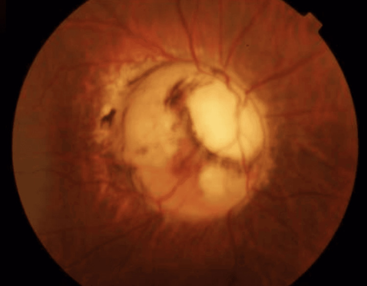
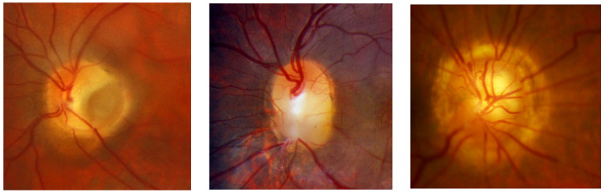
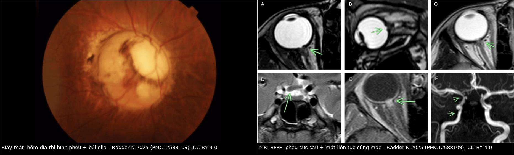
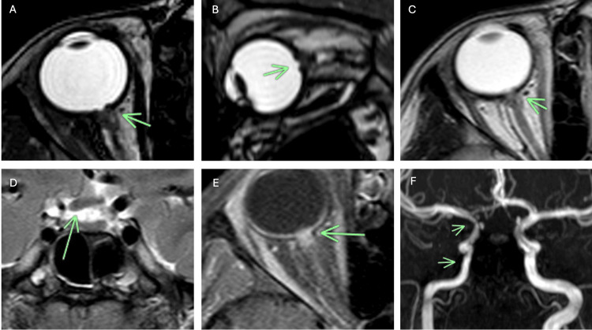
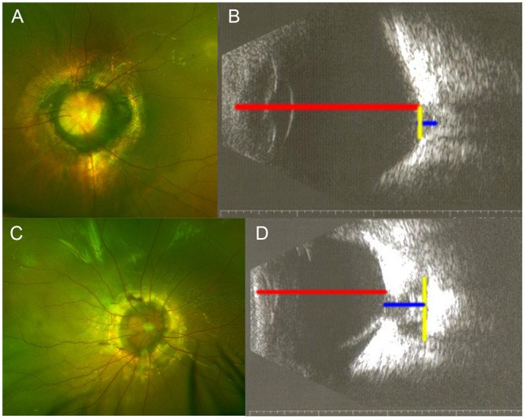
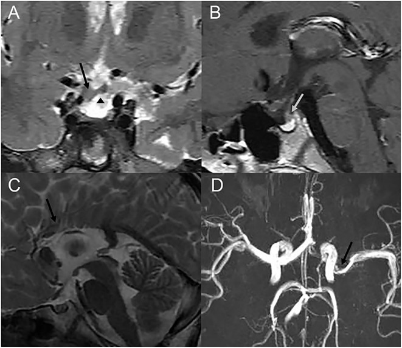

417 — Hội chứng Morning Glory: hõm đĩa thị hình phễu và bất thường nền sọ đường giữa / Morning glory disc anomaly (MGDA)
Tags: pattern:hong-dia-thi pattern:di-tat-dia-thi pattern:khuyet-cuc-sau vung:mat vung:nhan-cau vung:tre-em vung:nen-so protocol:MRI-hoc-mat protocol:MRA protocol:B-scan
Mức chắc chắn (certainty): tổng hợp y văn (literature synthesis) — tổng hợp 1 đoàn hệ 249 trẻ (271 mắt) có siêu âm định lượng, 1 ca MRI–MRA mô tả đủ bộ ba dấu hiệu, 1 tổng quan đa phương thức và 1 ca Moyamoya; số liệu lấy từ toàn văn, không lấy từ abstract.
1. Tổng quan — vì sao đĩa thị "nở như hoa" lại là bệnh của củng mạc sau và nền sọ
- Bệnh học (pathology): Morning Glory (MGDA) là dị tật hõm đĩa thị có khoang (cavitary disc anomaly): đĩa thị to, lõm sâu hình phễu, có búi glia trắng ở trung tâm, mạch võng mạc tỏa tia từ mép đĩa và quầng sắc tố hắc–võng mạc quanh đĩa. Tên gọi do Kindler 1970 vì giống hoa bìm bìm buổi sáng.

Đáy mắt mắt phải của bệnh nhi 3 tuổi: đĩa to và lõm, búi mô glia trắng ở trung tâm, mạch võng mạc tỏa đều ra mép; võng mạc quanh đĩa bị nâng nhẹ. Nguồn: Radder N, Radder S, Cureus 2025 (PMC12588109) Fig. 1, CC BY 4.0.- Cơ chế: giả thuyết được ủng hộ nhất là khiếm khuyết phát triển củng mạc sau và lá sàng quanh cuống thị, kèm bất thường trung mô thứ phát; hệ quả là củng mạc – hắc mạc – lá sàng mất liên tục tại chỗ đĩa thị đi vào nhãn cầu, tạo phễu lồi ra sau. Các nghiên cứu OCT gần đây còn thấy thông thương bất thường giữa khoang dưới nhện và khoang dưới võng mạc — đây là cơ sở của bong võng mạc thanh dịch và của thể co bóp (contractile).
- TẠI SAO nhìn thấy trên từng phương thức (vật lý):
- Củng mạc = collagen đặc → giảm tín hiệu trên mọi chuỗi xung T1/T2; chỗ mất liên tục củng mạc hiện ra như đoạn đứt của dải tối quanh nhãn cầu. Đây là dấu chốt phân biệt với phễu do co kéo đơn thuần.
- Dịch não tủy (CSF) và dịch kính > 98% là nước → T2 rất sáng; chuỗi T2 nặng (BFFE/CISS/FIESTA), lát ≤ 1–2 mm cho tương phản cao giữa CSF sáng – củng mạc tối – dây thần kinh thị tối, nên nhìn rõ phễu, màng võng mạc nâng lên và khoang dưới nhện bị xóa.
- Trên CT: củng mạc tăng đậm độ so với dịch kính (dịch kính gần 0–10 HU), nên CT thấy củng mạc dày/đứt và đặc biệt khiếm khuyết xương nền sọ — nhưng CT không bằng MRI cho mô mềm hốc mắt.
- Siêu âm B-scan 10 MHz: đo được độ sâu – độ rộng khoang và trục nhãn cầu (axial length, AL); đây là phương tiện định lượng nguy cơ bong võng mạc rẻ và lặp lại được ở trẻ.
- Ngưỡng định lượng phải nhớ (đoàn hệ 271 mắt MGDA, Zou 2021):
- Tần suất ~3,6/100.000 trẻ; nữ:nam ≈ 2:1; hai bên 8,8% (22/249).
- AL 20,25 ± 2,32 mm; độ sâu khoang 4,79 ± 2,07 mm; độ rộng khoang 5,69 ± 2,20 mm; tỷ lệ độ sâu/AL 0,24 ± 0,11.
- Bong võng mạc (retinal detachment, RD): 129/271 mắt = 47,6%; ở mắt có RD, độ sâu 5,45 vs 4,24 mm, độ sâu/AL 0,28 vs 0,21 (p < 0,001).
- Tỷ lệ độ sâu/AL ≥ 0,25 → OR 2,101 (95% CI 1,469–3,003) cho RD — ngưỡng hành động đơn giản nhất trên siêu âm.
- Thị lực kém < 2/200 ở 95/113 mắt (84%) đo được; PFV 28%, nhãn cầu nhỏ 15%, đục thể thủy tinh 8%, glaucoma thứ phát 1%.
- Bất thường sọ não: trong 75/249 trẻ có MRI/MRA/CT, 8 trẻ (10,7%) bất thường: Moyamoya 1, hẹp động mạch não 3, bất sản thể chai 1, nang nhện 1, loạn sản tuyến yên 2. Con số "45% bất thường mạch máu não" trong y văn là của nhóm được chọn chụp mạch, không dùng để tư vấn cho từng trẻ.
Phản biện trung thực: tần suất bất thường nội sọ dao động rất mạnh giữa các báo cáo (10,7% trong đoàn hệ trên so với 20–45% trong các nhóm chuyên khoa thần kinh–mắt). Vì vậy khuyến cáo đúng là chụp MRI não + MRA một lần cho mọi trẻ MGDA, không phải dựa vào một con số phần trăm để quyết định.
2. Mẫu hình + chẩn đoán phân biệt theo vị trí (gamut)
- Mẫu hình A — "đĩa thị to, lõm, có búi trắng và mạch tỏa tia": Morning Glory điển hình; thể co bóp (đĩa thay đổi khi Valsalva/đổi tư thế); hội chứng Morning Glory kèm PFV (dây xơ từ đĩa tới bao sau thể thủy tinh).
- Mẫu hình B — "hõm đĩa thị nhưng không có búi glia – mạch bình thường": coloboma đĩa thị (bờ rõ, thường dưới–mũi, hay kèm coloboma mống mắt/hắc võng mạc); hố đĩa thị (optic disc pit) (hố nhỏ xám ở mép đĩa, thường thái dương); staphyloma quanh đĩa (đĩa bình thường nằm trong hõm lồi ra sau); thể lai (hybrid cavitary disc anomaly).
- Mẫu hình C — "đĩa thị bất thường + bệnh nền sọ/nội tiết": thoát vị não nền sọ (basal encephalocele), bất sản thể chai, loạn sản tuyến yên/thiếu hormone tăng trưởng, Moyamoya/hẹp động mạch cảnh trong, nứt sọ mặt đường giữa.
- Gamut theo vị trí (điều tra theo giải phẫu):
- Hốc mắt: phễu cực sau, bong võng mạc thanh dịch/co kéo, PFV, nhãn cầu nhỏ, nang sau nhãn cầu.
- Vùng yên – trên yên: thoát vị não nền sọ qua xương bướm, tuyến yên lạc chỗ, cuống tuyến yên bất thường.
- Đường giữa não: thể chai, vách trong suốt, hố sau.
- Mạch máu não: Moyamoya, hẹp đoạn xoang hang/trên yên của động mạch cảnh trong, giảm sản A1.
- Sọ mặt: hẹp giữa mặt, sứt môi, dị tật mũi (khi có thoát vị não nền sọ).
3. Bảng so sánh phân biệt (ma trận đối chiếu)
| Thực thể (entity) | Hình ảnh điển hình | Chốt vào (rule-in) | Chốt loại (rule-out) | Gợi ý xác nhận |
|---|---|---|---|---|
| Morning Glory (MGDA) | Đĩa to, lõm sâu hình phễu, búi glia trắng trung tâm, mạch tỏa tia từ mép, quầng sắc tố quanh đĩa; MRI T2: phễu + mất liên tục củng mạc tại cuống thị | Búi glia trung tâm + mạch tỏa tia + mất liên tục dải củng mạc tối trên T2 | Đĩa bình thường nằm trong hõm → staphyloma; hố nhỏ một điểm → optic disc pit | Soi đáy mắt + chụp ảnh; B-scan đo khoang; MRI T2 mỏng |
| Coloboma đĩa thị (optic disc coloboma) | Hõm hình bát, bờ rõ, thường dưới–mũi, mạch bình thường, không búi glia; hay kèm coloboma mống mắt/hắc–võng mạc | Khuyết đĩa + khuyết hắc–võng mạc cùng phía + bờ sắc tố | Có búi glia + mạch tỏa tia → MGDA; đĩa nguyên vẹn → staphyloma | Soi đáy mắt, OCT; gen PAX2/CHD7 khi có hội chứng |
| Hố đĩa thị (optic disc pit) | Hố nhỏ, xám, giới hạn rõ ở mép đĩa (thường thái dương), phần còn lại của đĩa bình thường | Hố khu trú một điểm + đĩa còn lại bình thường | Toàn bộ đĩa lõm hình phễu → MGDA; khuyết bờ rõ → coloboma | OCT đĩa; theo dõi dịch dưới võng mạc hoàng điểm |
| Staphyloma quanh đĩa (peripapillary staphyloma) | Đĩa thị bình thường nằm trong hõm lồi ra sau rộng, không có khuyết mô đĩa | Đĩa nguyên vẹn + hõm quanh đĩa + mạch đi qua bình thường | Mất mô đĩa/búi glia → MGDA hoặc coloboma | MRI T2, OCT đĩa; so mắt lành |
| PFV giả Morning Glory (pseudo-MGDA) | Phễu do dây xơ co kéo từ đĩa tới bao sau thể thủy tinh; có mạch trong dây trên Doppler | Dây xơ + nhãn cầu nhỏ + không có mất liên tục củng mạc kiểu MGDA | Mất liên tục củng mạc + búi glia đúng đĩa → MGDA thật | Siêu âm Doppler, MRI; nội soi/ phẫu thuật |

Trái → phải: hố đĩa thị (hố nhỏ, đĩa còn lại bình thường), coloboma đĩa thị (hõm bát, bờ rõ), Morning Glory (đĩa to, phễu, búi glia và mạch tỏa tia). Nguồn: Cennamo G và cs, J Clin Med 2024 (PMC10932420) Fig. 1, CC BY 4.0.
Trái: đáy mắt mắt phải — đĩa to, lõm, búi glia trắng, mạch tỏa tia. Phải: MRI BFFE trục/vành — phễu cực sau, màng võng mạc nâng lên, mất liên tục củng mạc tại cuống thị; các lát D–E còn cho thấy mô bất thường quanh đoạn cuối dây thị và xóa khoang dưới nhện, F là MRA với hẹp động mạch cảnh trong cùng bên. Nguồn: Radder N, Radder S, Cureus 2025 (PMC12588109) Fig. 1–2, CC BY 4.0. Ảnh ghép letterbox, không crop.Ba dấu hiệu MRI của MGDA (đọc theo thứ tự)
- Phễu cực sau: đĩa thị lõm sâu ra sau, màng võng mạc nâng lên quanh phễu — thấy rõ nhất trên T2 nặng trục và vành.
- Mất liên tục củng mạc – hắc mạc – lá sàng tại chỗ dây thị đi vào nhãn cầu: dải giảm tín hiệu bị đứt; đây là dấu phân biệt với coloboma đơn thuần.
- Mô bất thường quanh đoạn cuối dây thị (glia/xơ/mô hắc mạc lạc chỗ) xóa khoang dưới nhện, có thể ngấm thuốc sau tiêm — không được gọi là u.
4. Protocol chụp + phân tầng nguy cơ
- Đáy mắt + chụp ảnh màu + SD-OCT đĩa/hoàng điểm ở mọi ca nghi ngờ; OCT giúp tìm dịch dưới võng mạc, lỗ ở mép phễu, màng trước võng mạc.
- Siêu âm B-scan 10 MHz (chuẩn hóa): đo AL tới mép khoang (không cộng độ sâu khoang), độ sâu tối đa, độ rộng tối đa; tính độ sâu/AL. Đây là ngưỡng phân tầng: ≥ 0,25 → nguy cơ RD cao (OR 2,10), theo dõi sát 3–6 tháng/lần.
- MRI sọ + hốc mắt (bắt buộc một lần):
- T2 nặng BFFE/CISS/FIESTA, lát ≤ 1–2 mm, trục + vành qua dây thị;
- T1 không/ có fat-sat trước và sau tiêm (tìm mô lạc chỗ, loại u);
- MRA TOF hoặc CTA nếu nghi hẹp mạch/Moyamoya;
- CT sọ lát mỏng khi nghi thoát vị não nền sọ (cần thấy khuyết xương bướm).

(A–E) MRI BFFE trục/vành qua hốc mắt: phễu cực sau (mũi tên), võng mạc kế cận nâng lên, mô bất thường quanh đoạn xa dây thị xóa khoang dưới nhện, mất liên tục củng mạc; (F) MRA: hẹp ICA phải và A1 phải giảm sản. Nguồn: Radder N, Radder S, Cureus 2025 (PMC12588109) Fig. 2, CC BY 4.0.- Tầm soát nội tiết khi MRI có bất thường tuyến yên/cuống: GH, IGF-1, prolactin, TSH/fT4, cortisol sáng — vì thiếu GH là bất thường nội tiết hay gặp nhất.
- Sàng lọc di truyền: MGDA hầu như lẻ tẻ, nguy cơ tái phát thấp; chỉ xét gen khi có dị tật đường giữa/hội chứng (CHARGE, PAX2...) — khác coloboma đĩa thị có thể di truyền.
flowchart TD
A[Trẻ có đĩa thị to, lõm, búi glia] --> B[Chụp ảnh đáy mắt + SD-OCT]
B --> C[B-scan: đo AL, độ sâu, độ rộng khoang]
C --> D{Độ sâu/AL >= 0,25?}
D -->|Có| E[Theo dõi 3-6 tháng: OCT + B-scan]
D -->|Không| F[Theo dõi 6-12 tháng + khúc xạ, nhược thị]
B --> G[MRI sọ + hốc mắt T2 mỏng + MRA]
G --> H{Có bất thường nền sọ hoặc mạch não?}
H -->|Có| I[Hội chẩn nội tiết/thần kinh + CT xương nền sọ]
H -->|Không| J[Tiếp tục theo dõi mắt]
E --> K{Thị lực giảm hoặc dịch dưới võng mạc tăng?}
K -->|Có| L[Khám võng mạc sớm; cân nhắc PPV]
K -->|Không| E
5. Biến thể bình thường và cạm bẫy
- Thể co bóp (contractile MGDA): đĩa thay đổi hình dạng khi đổi tư thế/Valsalva — dễ bị đọc nhầm là u hoặc giả phình; cơ chế được giải thích bằng dòng dịch qua thông thương dưới nhện–dưới võng mạc hoặc cơ trơn lạc chỗ. Chụp 2 tư thế và so sánh giúp tránh can thiệp oan.
- Bẫy siêu âm: nếu cộng độ sâu khoang vào AL, AL bị dài giả và tỷ lệ độ sâu/AL bị thấp giả → đánh giá nguy cơ RD sai. Luôn đo AL tới mép khoang như mô tả gốc.
- Bẫy MRI: lát > 3 mm hoặc không có T2 nặng làm mất dấu đứt củng mạc; phễu có thể bị bỏ qua nếu chỉ đọc mặt cắt trục thường quy.
- Satisfaction of search: thấy tổn thương mắt rồi dừng — bỏ sót thoát vị não nền sọ, Moyamoya, u tuyến yên. Đây là lý do MRI não + MRA là một phần của chẩn đoán, không phải "chụp thêm".
- Nhầm coloboma ↔ Morning Glory: coloboma có thể di truyền/hội chứng (PAX2, CHARGE) và có nguy cơ khác; MGDA lẻ tẻ — tư vấn di truyền sai nếu chỉ nhìn "đĩa lõm".
- "Phù đĩa thị" ở trẻ": phễu MGDA có thể bị đọc là phù gai/viêm thị; OCT và MRI phân biệt được.
- Bong võng mạc thanh dịch tự khỏi rồi tái phát: không được chọc dẫn lưu mù; cần OCT tìm lỗ/màng co kéo trước khi mổ.
6. Tự lượng giá — Blind Quiz
Ca 1 — Bé gái 3 tuổi, mắt phải nhìn kém, lác ngoài 15 độ. Ba ảnh đáy mắt dưới đây là ba thể khác nhau.
- Câu hỏi: Ảnh nào là Morning Glory? Ba dấu hiệu nào bắt buộc phải có? Hai thể còn lại khác ở điểm nào?
Bấm để hiện đáp án
- Ảnh phải là Morning Glory: đĩa to – lõm sâu, búi glia trắng trung tâm, mạch tỏa tia từ mép, quầng sắc tố quanh đĩa.
- Ảnh trái = hố đĩa thị: hố nhỏ khu trú, phần đĩa còn lại bình thường. Ảnh giữa = coloboma đĩa thị: hõm bát, bờ rõ, mạch bình thường, không búi glia.
- Nguồn: Cennamo G và cs, J Clin Med 2024 (PMC10932420) Fig. 1, CC BY 4.0.
Ca 2 — Bé trai 2 tuổi, MGDA mắt trái. Siêu âm B-scan dưới đây (A–B không có bong võng mạc; C–D có bong võng mạc).

- Câu hỏi: Đo gì trên ảnh? Tỷ lệ nào dự báo bong võng mạc? Vì sao AL phải đo tới mép khoang?
Bấm để hiện đáp án
- Đo AL (đường đỏ), độ sâu khoang (xanh) và độ rộng khoang (vàng); tính độ sâu/AL.
- Độ sâu/AL ≥ 0,25 → OR 2,101 (95% CI 1,469–3,003) cho bong võng mạc; ở đoàn hệ 271 mắt, 47,6% có bong võng mạc, độ sâu trung bình 5,45 mm ở nhóm bong so với 4,24 mm ở nhóm không bong.
- AL phải đo tới mép khoang, không cộng độ sâu khoang — nếu cộng, AL dài giả và tỷ lệ nguy cơ thấp giả.
- Nguồn: Zou Y và cs, Front Med 2021 (PMC8818885) Fig. 2 và kết quả, CC BY 4.0.
Ca 3 — Cùng đoàn hệ trên: 3 trẻ MGDA có bất thường trên MRI/MRA sọ (A–D).

- Câu hỏi: A–D lần lượt là gì? Vì sao mọi trẻ MGDA cần MRI não + MRA dù mắt chỉ một bên?
Bấm để hiện đáp án
- A–B: T2 vành + T1 sagittal — giao thoa thị dày, tuyến yên lạc chỗ, cuống tuyến yên bất thường ở trẻ thiếu hormone tăng trưởng. C: bất sản thân thể chai. D: MRA — hẹp đoạn M1 động mạch não giữa trái.
- MGDA là bất thường trung mô/đường giữa, không chỉ của mắt: trong 75 trẻ có chụp sọ, 8 (10,7%) có bất thường (Moyamoya, hẹp mạch, bất sản thể chai, nang nhện, loạn sản tuyến yên). Bỏ sót = bỏ lỡ nguy cơ đột quỵ, thiếu hormone, viêm màng não do thoát vị não nền sọ.
- Nguồn: Zou Y và cs, Front Med 2021 (PMC8818885) Fig. 4, CC BY 4.0.
Bài liên quan chéo
- 400 – Tổng quan Mắt & thị giác
- 415 – Phổ nhãn cầu nhỏ – coloboma (MAC)
- 411 – Siêu âm nhãn cầu
- 413 – PFV/PHPV: dây xơ dịch kính
- 432 – Vùng yên & bất thường tuyến yên
- 652 – Đột quỵ mạch máu não ở trẻ: Moyamoya & viêm mạch
Không dùng để chẩn đoán độc lập khi chưa có người hướng dẫn.